00:04到目前为止，我们一直只是在用直线去拟合数据。
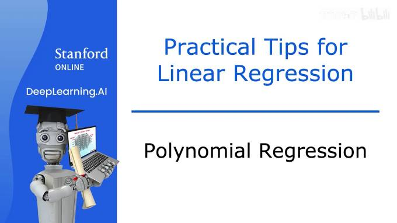
00:09让我们结合多元线性回归和特征工程的思想，提出一种叫做多项式回归的新算法，它将允许你用曲线、非线性函数来拟合你的数据。
00:23假设你有一个住房数据集，看起来像这样，其中特征 x 是面积，以平方英尺为单位。
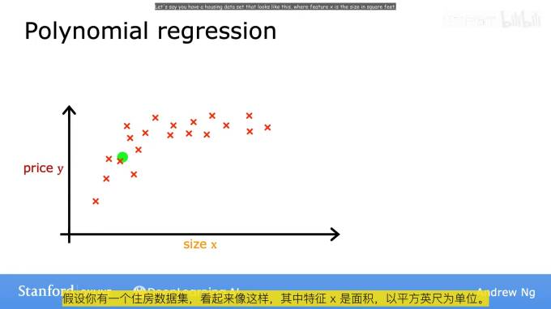
00:32看起来一条直线并不能很好地拟合这个数据集。
00:37所以，也许你想拟合一条曲线，可能是一个二次函数，像这样拟合数据，它包含面积 x 以及 x 的平方，也就是面积这个数的平方。
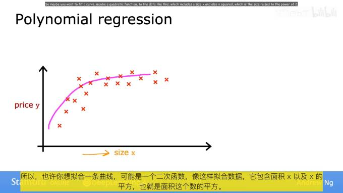
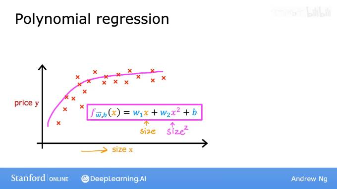
00:51这也许会给你一个更好的数据拟合。
00:55但之后，你可能会觉得你的二次模型并不真正合理，因为二次函数最终会回落。
01:03而我们通常并不预期房价会随着面积增大而下降，对吧？
01:09更大的房子似乎一般应该更贵。
01:13于是，你可能会选择一个三次函数，现在我们不仅有 x 的平方，还有 x 的立方。
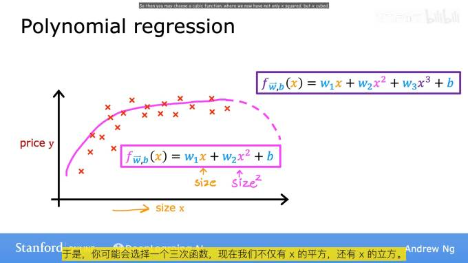
01:20所以，也许这个模型产生了这里的这条曲线，它是对数据的一个稍微更好的拟合，因为随着面积增大，值最终又会回升。
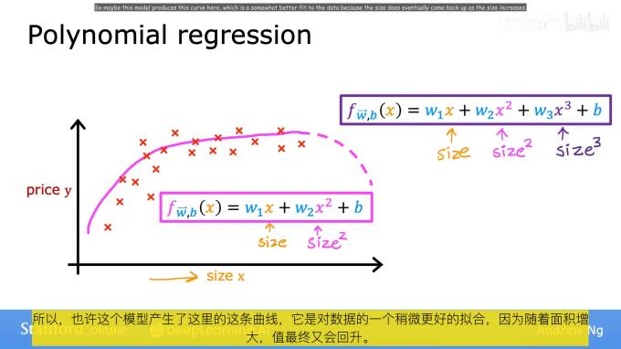
01:32这些都是多项式回归的例子，因为你将原始特征 x 进行了二次方、三次方或任意次方的运算。
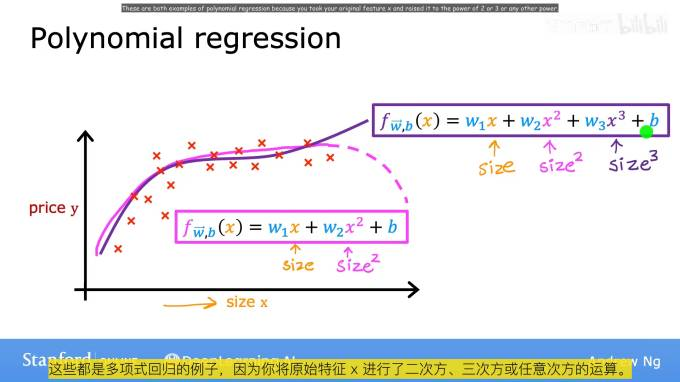
01:43而在三次函数这种情况下，第一个特征是面积，第二个特征是面积的平方，第三个特征是面积的立方。
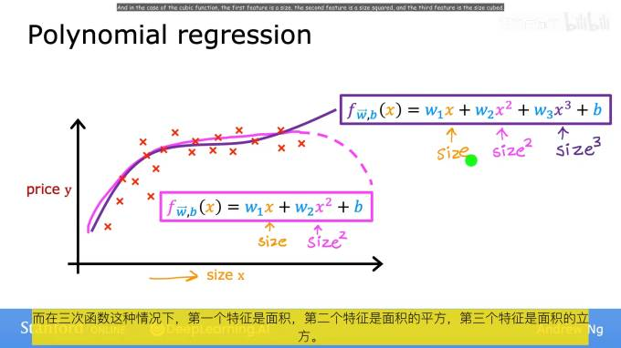
01:53我只想再指出一点，那就是如果你创建的这些特征，是像这样的原始特征的幂次方，那么特征缩放就变得愈发重要。
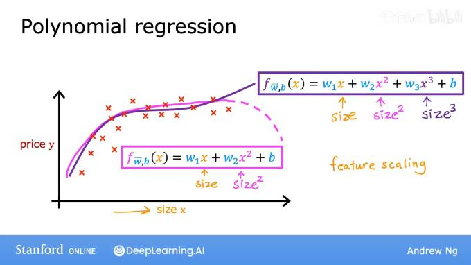
02:06如果房屋的面积范围是，比如说，从一平方英尺到一千平方英尺，那么第二个特征，即面积的平方的范围就会从一到一百万，而第三个特征，即面积的立方，范围则会从一到十亿。
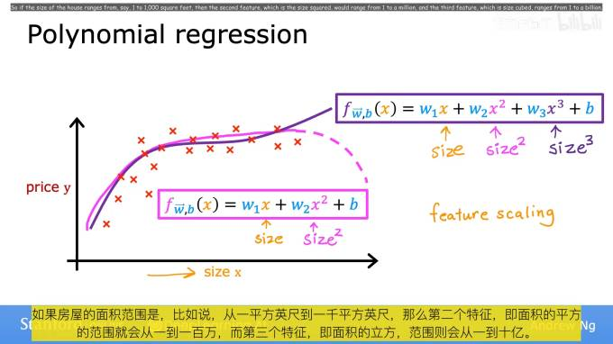
02:24如果房屋的面积范围是，比如说，从一平方英尺到一千平方英尺，那么第二个特征，即面积的平方 r 的范围就会从一到一百万，而第三个特征，即面积的立方，范围则会从一到十亿。
02:27所以，平方和 x 立方这两个特征，与原始特征 x 相比，它们的取值范围差异非常大。
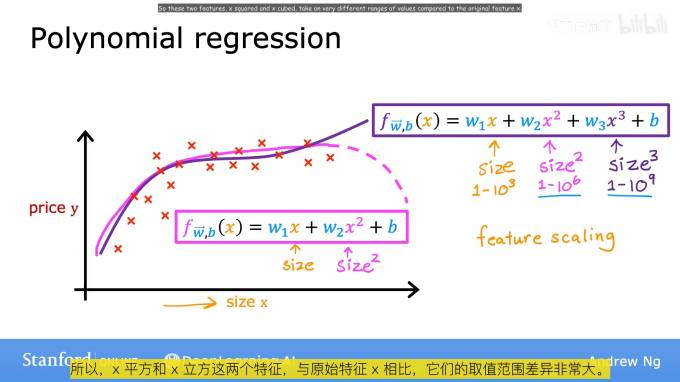
02:37如果你正在使用梯度下降，那么应用特征缩放来使你的特征处于可比较的值范围内是很重要的。
02:46最后，这里还有最后一个例子，说明你在选择特征时实际拥有非常广泛的选择。
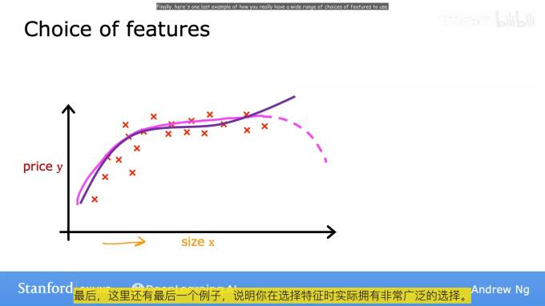
02:55另一种除了使用面积的平方和立方之外的合理选择是，比如说，使用 x 的平方根。
03:02所以你的模型可能看起来像 W 一乘以 x 加 w 二乘以 x 的平方根再加上 b。
03:11平方根函数看起来像这样，它会变得稍微不那么陡峭。
03:17随着 x 增大，但它永远不会完全变平，而且它肯定不会回落。
03:24所以，这也可能是另一个特征选择，也许同样能很好地适用于这个数据集。
03:30那么，你可能会问自己，我如何决定要使用哪些特征呢？
03:35稍后，在专项课程的第二门课中，你将看到如何选择不同的特征和不同的模型，包括是否纳入这些特征，并且你将有一个流程来衡量这些不同模型的表现，以帮助你决定应包含或不包含哪些特征。
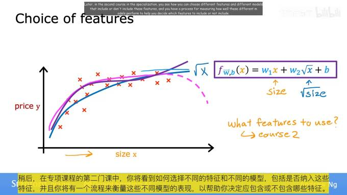
03:56就目前而言，我只想让你意识到，你可以选择使用什么特征，并且通过使用特征工程和多项式函数，你有可能为你的数据得到一个更好的模型。
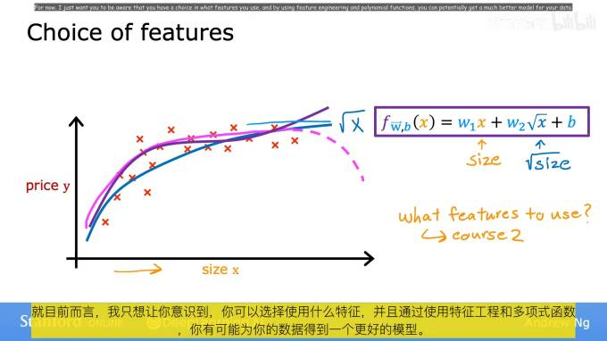
04:10就目前而言，我只想让你意识到，你可以选择使用什么特征，并且通过使用特征工程和多项式函数，你有可能为你的数据得到一个更好的模型。
04:14在这个视频之后的选修实验中，你将看到一些代码，它们实现了使用诸如 x、x 的平方和 x 的立方等特征的多项式回归。
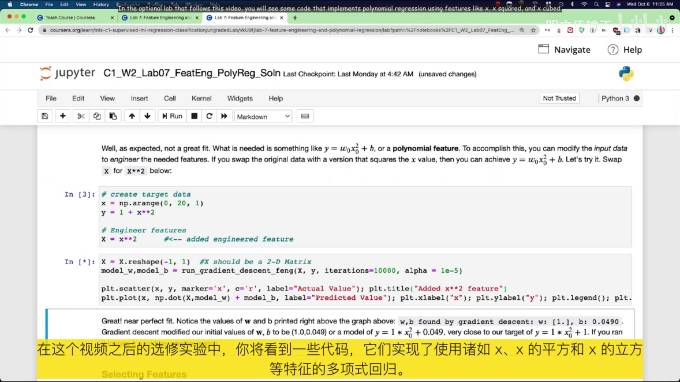
04:22所以，请看一看并运行代码，看看它是如何运作的。
04:27在那之后，还有另一个选修实验，展示了如何使用一个实现了线性回归的流行开源工具包。
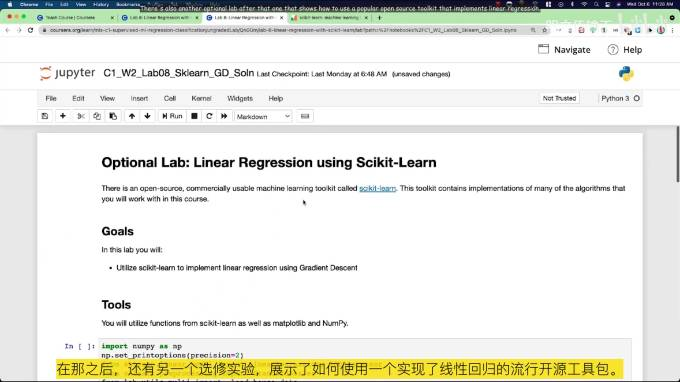
04:37Scikit-learn 是一个应用非常广泛的开源机器学习库，被全球许多顶尖的 AI、互联网和机器学习公司的众多从业者所使用。
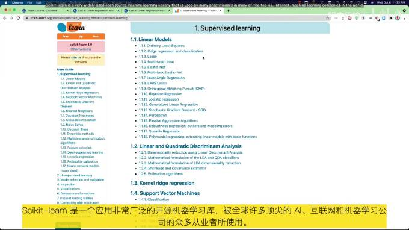
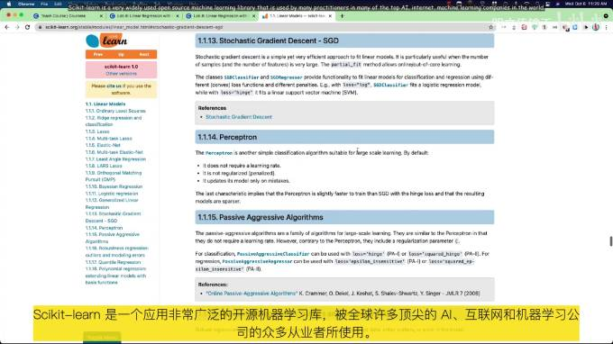
04:50所以，如果你现在或将来在工作中使用机器学习，那么你极有可能会使用像 scikit-learn 这样的工具来训练你的模型。
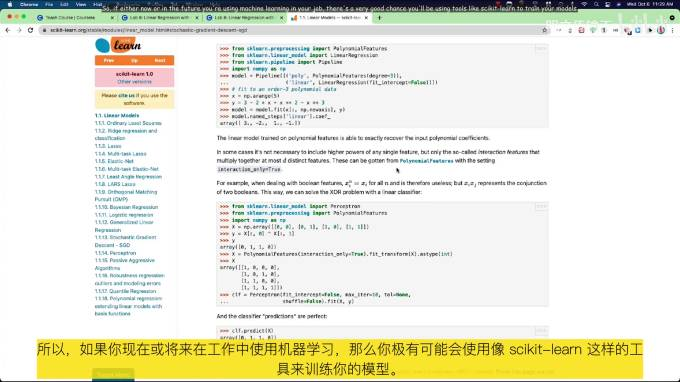
05:02因此，完成那个选修实验将给你一个机会，不仅能更好地理解线性回归，还能看到如何使用像 scikit-learn 这样的库，仅仅几行代码就能实现这一点。 source。
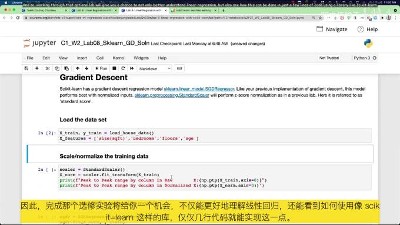
05:16为了让你对这些算法有扎实的理解并能够应用它们，我确实认为，重要的是你要知道如何自己去实现线性回归，而不仅仅是调用某个 scikit-learn 函数，把它当作一个黑箱。
05:31但 scikit-learn 在当今实际应用的机器学习方式中也扮演着重要的角色。
05:38那么，我们就快要到本周的结尾了。
05:42恭喜你完成了本周所有的视频。
05:45请务必看看练习测验和练习实验，我希望这能让你尝试并练习我们讨论过的想法。
05:55在本周的练习实验中，你将实现线性回归。
05:59我希望你能享受让这个学习算法为你自己工作的乐趣。